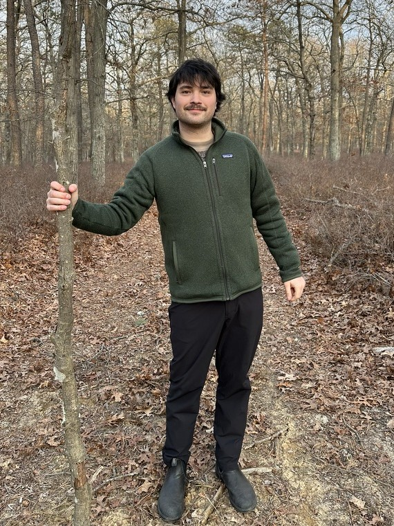
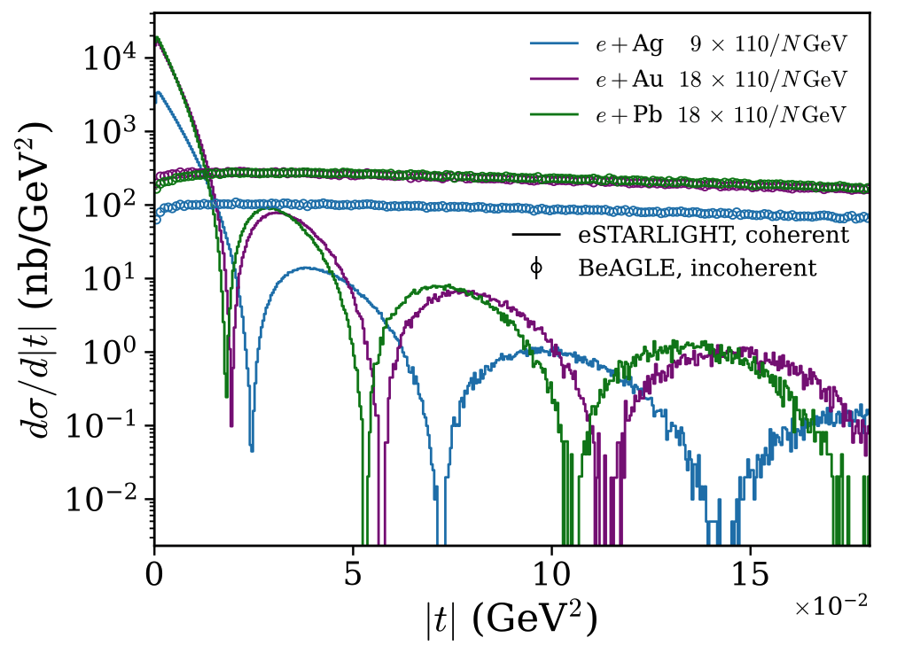
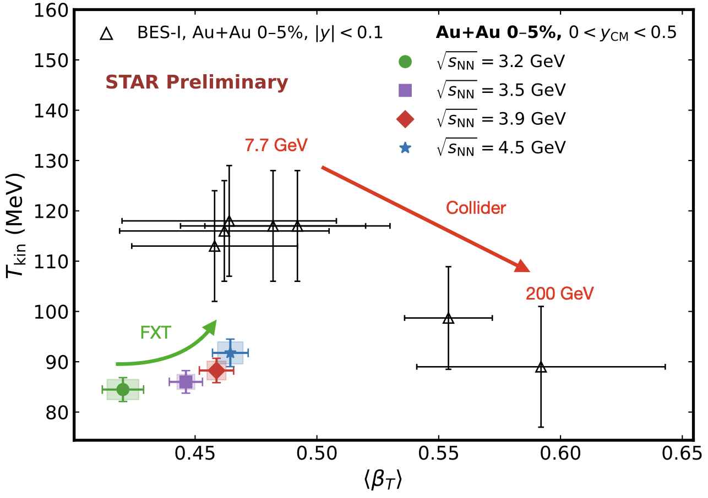
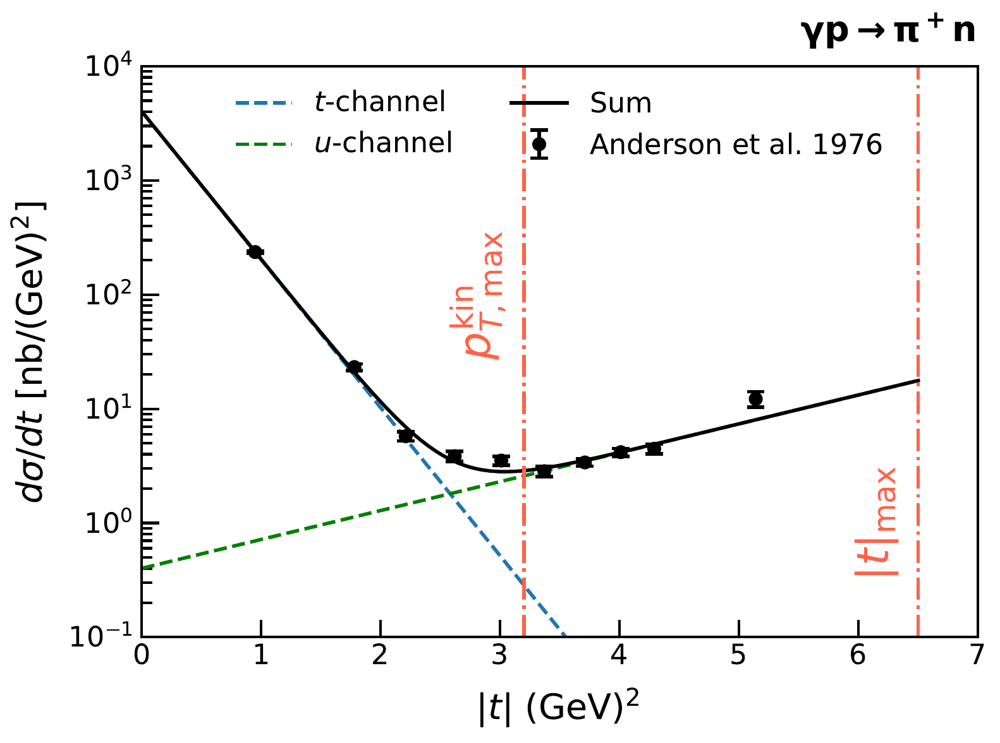
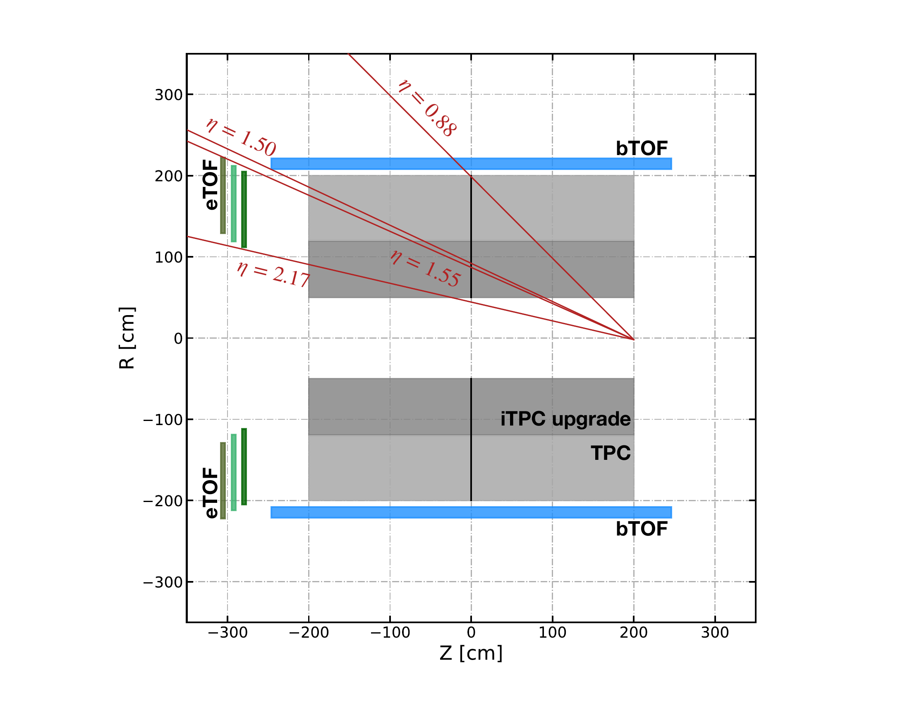

Research
What I Work On

I study the properties of nuclear matter at extreme temperatures and densities. I use heavy-ion collisions at STAR to map out the QCD phase diagram, and photoproduction to image the inside of protons and nuclei, including for the future Electron-Ion Collider. Increasingly, I apply machine learning to these problems, including as part of a DOE Genesis Mission team.
Publications
As a STAR author since 2023, I am an author on 50+ collaboration publications. For a comprehensive list, see the STAR publication list or my INSPIRE-HEP profile. Publications in which I served in a principal capacity are listed below.
Papers

Efficiently separating coherent and incoherent vector-meson photoproduction is a key challenge for the EIC. This is usually straightforward, but sometimes the nucleus remains intact, and the only way to tag the event as incoherent is to detect the low-energy photon from the resulting nuclear de-excitation. While high-energy physicists are used to ignoring nuclear shell effects, we show that they can affect our ability to tag incoherent events.

We study the bulk properties of the system produced in Au+Au collisions at STAR fixed-target energies (√sNN = 3.2–4.5 GeV). The rapidity, centrality, and energy dependence of the kinetic freeze-out temperature and the transverse velocity of the expanding fireball are reported. These are preliminary results that will be finalized in forthcoming publications.

We argue that backward exclusive meson production in photon-proton collisions probes the spatial distribution of baryon number within the proton. Using Fourier-Bessel transformations of the transverse momentum dependence of the production cross sections in four channels (γp → pρ0, pω, nπ+, and pπ0), we extract two-dimensional images of the interacting systems and find that baryon number is concentrated within a transverse radius of 0.33–0.53 fm — significantly smaller than the charge and mass radii of the proton.

The endcap time-of-flight (eTOF) subsystem was installed in STAR in 2019 to provide mid-rapidity particle identification for the fixed-target program of BES-II, extending RHIC's reach to center-of-mass energies from 3.0 to 7.7 GeV. Built from FAIR/CBM detector modules, the system achieved a time resolution of approximately 70 ps and a PID efficiency of about 70%. This paper details the detector layout, acceptance, calibration, hit reconstruction, and particle identification performance.
Theses
Anisotropic flow is a key observable for characterizing the quark-gluon plasma produced in heavy-ion collisions. This thesis presents measurements of flow vector fluctuations using data from the ALICE experiment at the LHC, probing the event-by-event variations in the magnitude and orientation of the flow harmonics to constrain the initial-state geometry and transport properties of the medium.
Pulmonary fibrosis involves the progressive scarring of lung tissue, but its quantification in histological samples remains subjective. This thesis develops computational methods to quantify fibrotic tissue in murine lung histology slides, providing a more objective and reproducible measure of disease severity than traditional scoring approaches.